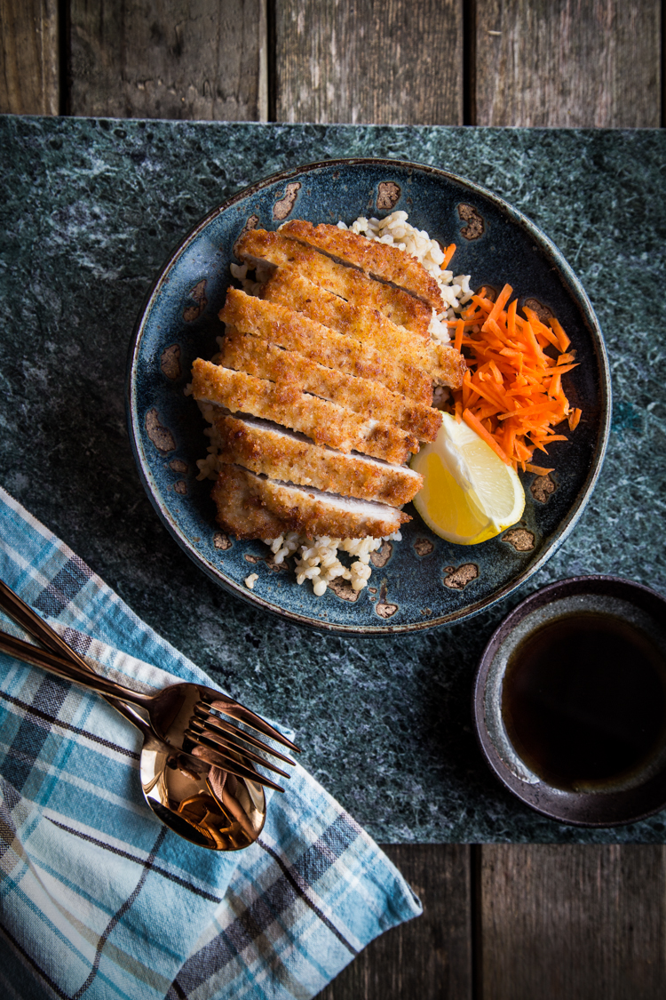

Tonkatsu

What is Tonkatsu?
Tonkatsu is a Japanese dish featuring a breaded and deep-fried pork cutlet, prized for its crispy exterior and juicy, tender meat, but in our recipe, we'll be substituting pork with chicken. It's known for its satisfying crunch and delightful combination of flavors when paired with its signature sauce.
Ingredients
- 225g of boneless,snikless chicken breast halves
- 1 cup of all–purpose flour
- 3 eggs thorougly beaten
- 140g Japanese panko bread crumbs
- Kosher salt and freshly ground black pepper
- Vegetable, canola, or peanut oil
- Homemade or store-bought tonkatsu sauce
Instructions
- Cut each breast half into 2 cutlets. Place them, one at a time, in a heavy-duty zipper-lock bag and pound gently to 1/4-inch thickness using a meat pounder or the bottom of a heavy 8-inch skillet. Season generously with salt and pepper. For best results, let them rest in the refrigerator for at least 4 hours and up to overnight after seasoning. Proceed to step 3.
- Fill 3 wide, shallow bowls or high-rimmed plates with flour, beaten eggs, and panko, respectively. Working with one thigh or cutlet at a time, dredge in flour with your first hand, shaking off excess. Transfer to egg dish, then turn thigh or cutlet with your second hand to coat both sides. Lift and allow excess egg to drain off, then transfer to bread crumb mixture. With your first hand, scoop bread crumbs on top of thigh or cutlet, then gently press, turning to ensure a good layer of crumbs on both sides. Transfer thigh or cutlet to a clean plate and repeat with remaining meat. If this is done properly, your first hand should touch only dry ingredients, while your second hand should touch only wet, making the process less messy.
- Fill a large cast iron or stainless steel skillet with 1/3 inch oil. (To speed things up even more, use 2 skillets simultaneously.) Heat over high heat until shimmering and just shy of smoking, about 350°F (175°C) on an instant-read thermometer.
- Using tongs or your fingers, gently lower cutlets into hot fat, laying them down away from you to prevent hot fat from splashing toward you. (Work in batches if necessary.) Fry, gently swirling pan and rotating cutlets for even browning, and adjusting heat as necessary for a steady, vigorous bubble (around 300 to 325°F; 150 to 160°C), until bottom side is set, about 1 1/2 minutes. Flip cutlets and fry until other side is set, about 1 1/2 minutes longer. Continue cooking, swirling frequently and flipping occasionally, until well browned on both sides, about 3 minutes longer. Transfer to paper towels to drain and season with salt right away. Repeat with remaining cutlets.
- Slice katsu into thin strips and serve immediately with shredded cabbage, lemon wedges, white rice, Japanese pickles (if desired), and tonkatsu sauce.